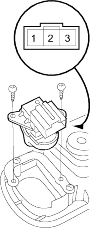

- Remove the driver's door panel (see page 20-7).
- Remove the two mounting screws and the door lock switch.

- Check for continuity between the terminals.
- There should be continuity between the No. 1 and No. 2 terminals when the door lock switch is in the LOCKED position.
- There should be continuity between the No. 2 and No. 3 terminals when the door lock switch is in the UNLOCKED position.